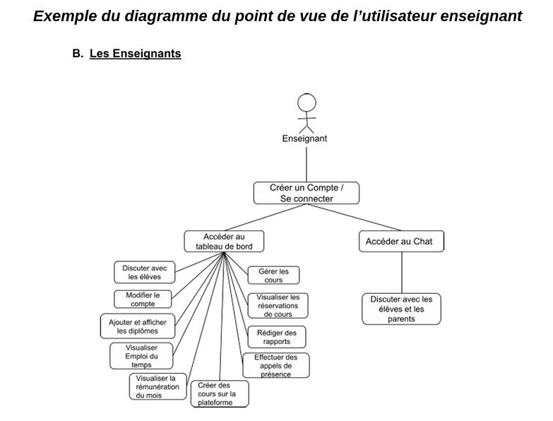

FICHE DESCRIPTIVE :
Dates du stage :
- Date début : 20/05/2025
- Date fin : 28/06/2025
Entreprise : Association Identités Remarquables
Présentation de l'entreprise :
L’association Identités Remarquables est une structure basée à Montigny lès Cormeilles favorisant l’excellence scolaire. Via son site web, l’association met en relation des professeurs qualifiés et des élèves/parents d’élèves. Le site web Chercheunprof.com est une marketplace de soutien scolaire permettant aux professeurs de proposer des cours et aux parents d’inscrire leurs enfants. Actuellement, les cours ont lieu à distance ou dans un local réservé par l’association. Lors de mon stage, j’ai été encadrée par Monsieur BOUROUIS Mohamed, représentant de l’organisme et tuteur de stage.
Missions & tâches réalisés :
Ma mission lors de ce stage de six semaines était de contribuer au développement du site web Chercheunprof.com. Le site permettait déjà des fonctionnalités basiques de mise en relation, mais manquait de robustesse pour la gestion opérationnelle et financière à grande échelle. L’objectif de cette nouvelle version était alors de transformer la plateforme en un écosystème complet d'apprentissage, avec un système structuré d'Exercice Annuel, une gestion avancée des établissements sous marque blanche, et l'intégration de technologies permettant un meilleur suivi des flux financiers entre les instances.
| Semaine | Mission |
|---|---|
| Semaine 1 | Prise en main du site |
| Semaine 2 | Rédaction de la première version du cahier des charges : Présentation du projet et fonctionnement du site |
| Semaine 3 | Rédaction de la première version du cahier des charges : Architecture fonctionnelle |
| Semaine 4 | Rédaction de la première version du cahier des charges : Architecture fonctionnelle
Entretien avec la RH pour relever les différents bugs et les améliorations possibles du site |
| Semaine 5 | Entretien avec une stagiaire en droit pour préparer les éventuels contrats présents sur le site
Rédaction de la version finale du cahier des charges |
| Semaine 6 | Peaufinage de la version finale du cahier des charges
Entretien avec le développeur pour présenter le cahier des charges de la nouvelle version du site |
- Semaine 1 :
La première semaine m’a permise de me familiariser avec le site déjà existant. Le premier
jour, je me suis rendue au local de l’association à Montigny-lès-Cormeilles pour retrouver
mes maîtres de stage. On a passé la journée à voir chaque fonctionnalité du site et ils m’ont
expliqué ce qui pourrait être amélioré.
Il y avait beaucoup d’informations, beaucoup de bugs à signaler, et certaines fonctionnalités
étaient difficiles à comprendre : notamment l’aspect financier, puisque le site comprenait une
plateforme administrative accessible uniquement aux gérants de l’association. Sur cette
plateforme, une rubrique FINANCES a été créée pour leur permettre de gérer les différentes
rémunérations des professeurs. Il fallait donc prendre en compte les charges selon le statut
du professeur (entrepreneur ou salarié).
- Semaine 2 :
La deuxième semaine, on m’a attribué des codes pour que je puisse accéder à la plateforme
administrative sans limites.
Je pouvais donc créer et accéder à des comptes de parents/élèves/professeurs afin de faire
le point sur toutes les fonctionnalités du site.
Je me suis mise à la place de chaque utilisateur et j’ai réalisé des diagrammes recensant
toutes les actions qu’ils pouvaient faire.

Une fois les diagrammes faits, j’ai créé pour chaque profil, des tableaux énumérant toutes les fonctionnalités et évaluant leurs niveaux de maturité et les raisons justifiant ce niveau. Cela m’a permis de faire de nouveau un tableau comprenant uniquement les fonctionnalités ayant un niveau de maturité bas, et les solutions attendues. Ces diagrammes et tableaux ont été ajoutés dans le cahier des charges, sur un google doc partagé avec les collaborateurs concernés (maîtres de stage et 2e stagiaire).
- Semaine 3 :
La troisième semaine était dédiée à la rédaction du cahier des charges. Le bilan des
fonctionnalités du site ayant été fait la semaine passée, il s’agissait désormais de rendre
compte de toutes les améliorations réclamés dans la nouvelle version du site.
Nous avons donc divisé cette partie en plusieurs modules regroupant chacune des
fonctionnalités d’un même thème. Par exemple, le module Annonces contient toutes les
fonctionnalités à améliorer ou à implémenter en lien avec les annonces de cours publiées
sur le site (améliorer le moteur de recherche, modifier les informations visibles etc).
Les bilans hebdomadaires en présentiel avec nos responsables nous permettait de voir en
détail les différents cas d’usage et les assurait une bonne compréhension des différentes
fonctionnalités à implémenter pour la nouvelle version du site.
Il y a au total 13 modules d’environ 10 pages. Ce travail a donc été assez long et fastidieux
parce qu’il fallait faire des maquettes, des tableaux et réfléchir à tous les cas d’usage.
- Semaine 4 :
La quatrième semaine, nous avons continué de rédiger le cahier des charges en détaillant
chaque module. Nous avons notamment abordé les modules les plus complexes, comme le
module visant à implémenter la notion d’Exercice Annuel, c'est-à-dire que les données
financières et pédagogiques pour chaque année soient enregistrées dans une base de
données et facilement accessibles.
La difficulté de la quatrième semaine était de comprendre et savoir expliquer des notions qui
ne m’étaient pas familières. Par exemple, notre maître de stage voulait intégrer une API
OpenFisca pour faciliter la comptabilité, et implémenter un moyen de paiement via Stripe
Connect pour faciliter les flux financiers entre l’association et ses collaborateurs.
Je ne connaissais pas ces API et j’avais du mal à comprendre comment les implémenter et
quelles informations je devais mettre en avant dans le cahier des charges.
D’autre part, nous avons eu un rendez-vous avec la RH pour avoir son retour sur le site et
les éventuelles améliorations qu’elle aimerait voir. Ce rendez-vous a été très utile parce
qu’elle a une expérience quotidienne des potentiels bugs du site et des retours des parents
et professeurs.
Elle nous a notamment expliqué que le système permettant de calculer automatiquement les
salaires des professeurs selon leurs nombre d'heures de cours et d’élèves était incorrect.
Elle était alors obligée de reprendre tous les calculs manuellement.
- Semaine 5
Lors de cette avant dernière semaine, nous avons terminé et mis au propre le cahier des
charges. Il a été nécessaire de revoir l’organisation des modules.
Après une relecture, notre chef de stage a souligné les passages à retravailler, et s’est
occupé des modules plus techniques (notamment les modules en lien avec la comptabilité).
Nous nous envoyions régulièrement des messages sur le groupe Whatsapp et j’ai eu
quelques appels avec le chef pour qu’on puisse trouver des solutions à certains cas
d’usage.
Exemple de cas d’usage problématique : Si un parent retire son enfant d’un cours et que le
nombre minimum d’élèves dans ce cours n’est alors plus suffisant, que deviennent les
autres élèves inscrits ? Remboursement des parents ? ou le système les met dans un autre
cours si possible ?
D’autre part, nous avons eu un rendez-vous en visio avec une stagiaire en droit afin de
l’aider à rédiger des contrats entre les différents collaborateurs de l’association et cette
dernière (les professeurs, les élèves, les partenaires etc).
J’ai donc rédigé un document rappelant le contexte et regroupant les endroits sur le site où
un contrat pourrait être nécessaire. (Exemple : lorsqu’un utilisateur crée un compte, des
conditions d'utilisation doivent être acceptées pour utiliser la plateforme).
- Semaine 6
La dernière semaine nous a permis de peaufiner une dernière fois le cahier des charges.
Un rendez-vous avec le développeur était prévu, nous devions lui présenter le cahier des
charges et répondre à ces questions. C’était également l’occasion de l’interroger sur son
métier.
Malheureusement, le développeur était malade et a annulé.
Le cahier des charges final comporte 104 pages, 22 tableaux, 7 diagrammes, et 31
maquettes.
Compétences Mobilisées :
| Rédaction | Culture Économique et Juridique | Travail d’équipe |
|---|---|---|
| J’ai appris à rédiger un cahier des charges avec rigueur et souci du détail. On m’a enseigné des méthodes techniques pour analyser les fonctionnalités d’un site (niveau de maturité, diagrammes). J’ai par ailleurs appris à utiliser les outils de Google Docs pour ajouter des titres et faire des maquettes. | Afin de réaliser les modules en lien avec la comptabilité, j’ai dû utiliser les notions vues en cours de CEJM pour pouvoir comprendre les notions de bénéfices, charges, salaire BRUT et NET etc. Lors de l’entretien avec la stagiaire en droit, j’ai appliqué les connaissances que j’avais pour repérer les différentes parties prenantes sollicitées par la plateforme. Cette expérience m’a prouvé que les notions théoriques vus en cours sont directement applicables dans un contexte professionnel, et sont utiles même si ce n’est pas mon domaine d’étude. | Au cours de mon stage, j’ai su travailler en équipe, rendre des comptes et être autonome. J’étais en télétravail la majorité du temps (avec une réunion en présentiel par semaine pour faire le point). Cette disposition m’a permis d’apprendre à être autonome, m’organiser, et chercher les informations moi même lorsque je ne comprenais pas tout (notamment pour les API). J’ai pu accomplir les missions à temps et être fière de mon travail. |
Conclusion :
Mon premier stage en informatique a été une expérience réellement enrichissante, parce qu’elle m’a permis de voir ce qu’on peut attendre d’un développeur et la manière dont les idées d’une personne sont parfois difficiles à intégrer d’un point de vue extérieur (ce qui peut alors être une difficulté en tant que développeuse). Je n’ai pas eu à utiliser mes compétences en programmation mais j’ai pu mettre en pratique des compétences plus théoriques, ce qui m’a fait réaliser que toutes les notions apprises en cours sont importantes, peu importe la matière. Je vais donc faire au mieux pour maîtriser ces connaissances. Aussi j’ai aimé l’idée de créer un univers sous forme d’application, site, jeux, à partir d’une idée ou d’une cause. Cette expérience m’a donné envie de faire des projets personnels pour donner vie à mes propres idées. Le fait d’être sortie de ma zone de confort en me confrontant à des tâches qui n’étaient à priori pas adaptées à mon niveau (entretien avec la stagiaire en droit, API, Modules difficiles à rédiger etc.), me donne du courage pour sortir davantage de ma zone de confort en informatique, en utilisant des langages que je ne maîtrise pas ou en essayant de créer des projets ambitieux pour mon niveau. Point négatif J’aurais aimé pouvoir m’entretenir avec le développeur pour comprendre quel est son parcours et s' il est parfois difficile pour lui de comprendre les attentes d’un client.